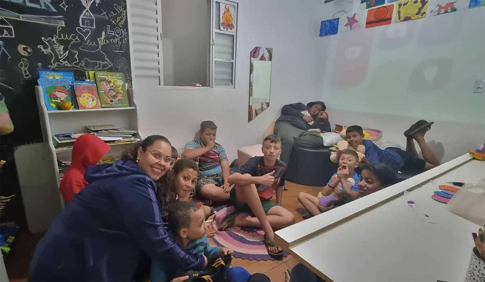

01Estímulo educacionalCrianças de 6 a 11 anos
Clube do Saber
Cronograma semanal com oficinas de expressão artística, horta comunitária, rodas de bate-papo, recreação e circuitos pedagógicos.
- Estimula o aprendizado, a convivência e o desenvolvimento social.
- Promove a criatividade, fortalece vínculos e desenvolve as potencialidades de cada criança.